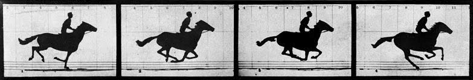

Your browser doesn't support the features required by impress.js, so you are presented with a simplified version of this presentation.
For the best experience please use the latest Chrome or Safari browser. Firefox 10 (to be re�leased soon) will also handle it.
Fagdag
26. januar 2012
Agenda
- + Debugging av JavaScript i browseren
- + Cloud
- + Mye eksempler
Would you like to impress your audience with stunning visualization of your talk?
Breakpoint debugging

- Break on error
- Break on next JavaScript call
- Break on DOM mutation
- Break on network events
Bli en breakpoint ninja: Lær deg keyboard shortcuts
Console
http://getfirebug.com/wiki/index.php/Console_API
http://getfirebug.com/wiki/index.php/Command_Line_API
- Bruk console for forsking
- > $$(css-selector)
- > $x(xpath)
- > $0
- > copy(string)
- > dir(object)
- > log('Explore an object', {a:1, b:2});
- > log('I am in this function', true, 1, [0,1,0,0,0,1,0,1]);
- > trace();
Bli en console ninja: Lær deg keyboard shortcuts
Next
- * Mye av funksjonaliteten til Firebug blir bygd inn
- * Tilt 3D
- * Debug maskert kode
- * Remote debugging
- * Enonic CMS Server Trace